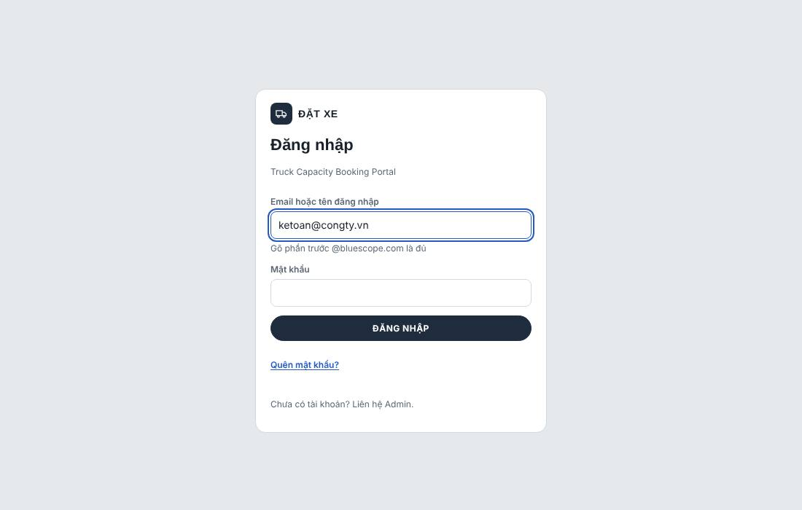
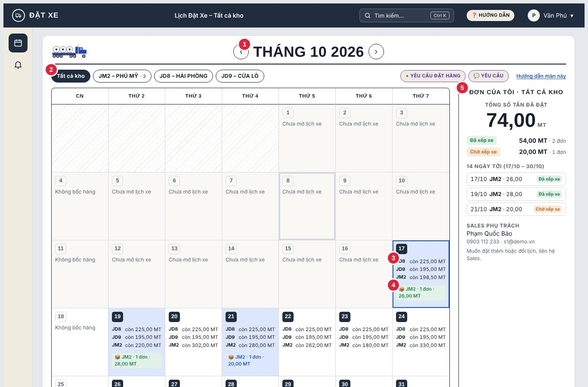
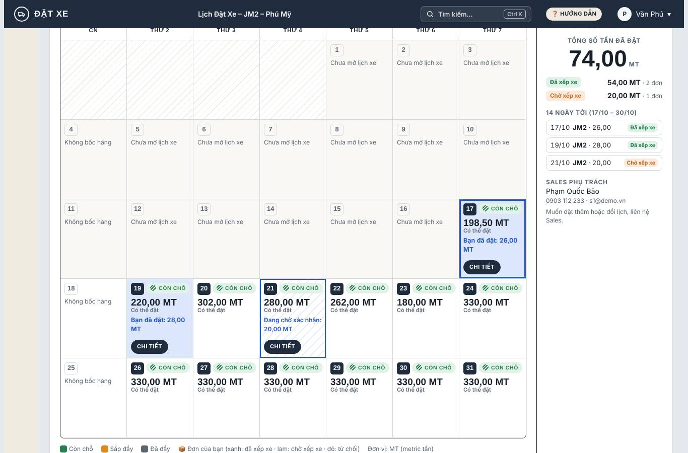
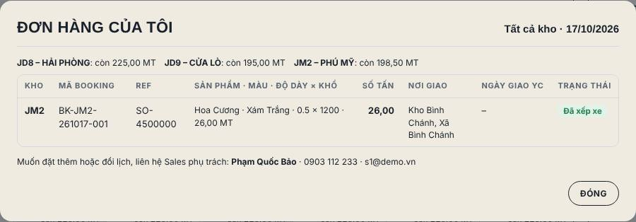
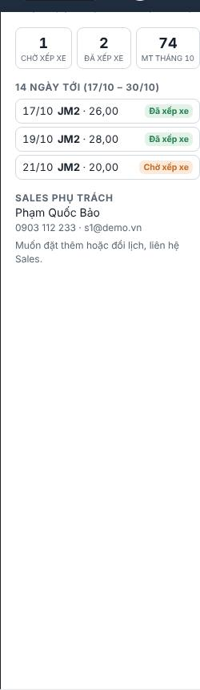
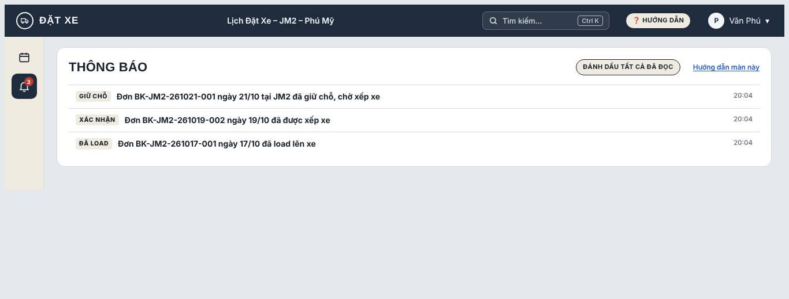
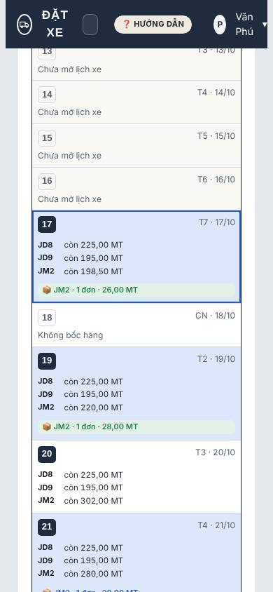
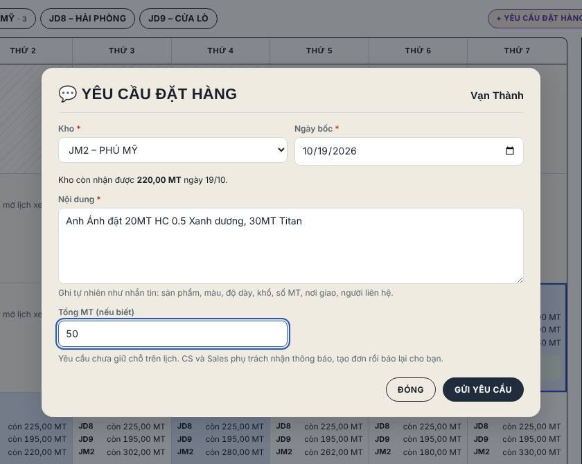

Cổng Đặt xe BlueScope
Đây là nơi bạn theo dõi lịch bốc hàng các đơn của công ty mình tại kho BlueScope: ngày nào kho còn nhận được bao nhiêu hàng, đơn nào đã có xe, đơn nào đang chờ, đơn nào được đề nghị đổi ngày.
Đơn hàng do
CS / Sales BlueScope tạo cho bạn. Muốn đặt thêm, bấm
+ Yêu cầu đặt hàng ghi nhanh nhu cầu (xem mục
Gửi yêu cầu đặt hàng); đổi ngày hay hủy đơn thì liên hệ
Sales phụ trách (tên và số điện thoại ở khung bên phải).
Đơn vị khối lượng: MT (metric tấn).
Đăng nhập
- Mở truck-capacity-portal.pages.dev.
- Nhập email BlueScope đã đăng ký cho bạn và mật khẩu.
- Nếu hệ thống hỏi mã xác thực, mở email để lấy mã 6 số rồi nhập vào.

Đổi mật khẩu: bấm tên của bạn ở góc trên phải → Hồ sơ.
Quên mật khẩu: bấm "Quên mật khẩu?" ở màn đăng nhập, hệ thống gửi link đặt lại vào email.
Dùng máy tính chung thì nhớ bấm tên → Đăng xuất khi xong.
Đọc lịch "Tất cả kho"
Đây là màn hình chính, mở ngay khi đăng nhập.

- Chọn tháng: bấm ‹ › để xem tháng trước / sau.
- Chọn kho: Tất cả kho hoặc từng kho. Kho bạn hay đặt đứng đầu; số nhỏ cạnh tên (ví dụ · 3) là số đơn của bạn ở kho đó trong tháng. Lần sau mở, hệ thống nhớ kho bạn chọn.
- Ô ngày: mỗi dòng là một kho, ghi số MT còn nhận được trong ngày đó. Chữ xám gạch ngang Đã đầy nghĩa là kho đã kín lịch.
- Huy hiệu 📦: ngày có đơn của bạn, ghi kho, số đơn và số MT. Màu cho biết tình trạng (xem mục Màu và trạng thái đơn). Ô có đơn của bạn được tô nền xanh nhạt.
- Đơn của tôi: tóm tắt đơn của bạn (xem mục Khung Đơn của tôi).
- Chưa mở lịch xe: kho chưa xếp lịch xe cho ngày đó (thường là ngày còn xa).
- Không bốc hàng: Chủ nhật, ngày lễ hoặc ngày kho nghỉ.
- Bấm vào ô ngày: hiện menu Yêu cầu giao ngày này / Xem đơn của tôi. Bấm đúp để xem ngay đơn của bạn trong ngày.
Xem một kho
Bấm tên kho trên hàng nút để chỉ xem kho đó.

- … MT Có thể đặt: kho còn nhận được bấy nhiêu MT trong ngày.
- Bạn đã đặt: … MT: đơn của bạn đã có xe.
- Đang chờ xác nhận: … MT: đơn đã giữ chỗ, đang chờ xếp xe.
- Nút Chi tiết: xem danh sách đơn trong ngày.
Muốn quay lại xem mọi kho, bấm Tất cả kho.
Chi tiết đơn trong ngày

- Dòng đầu: số MT còn nhận được của từng kho trong ngày.
- Kho, Mã booking (mã BlueScope dùng khi trao đổi), Ref (số tham chiếu / PO của bạn).
- Sản phẩm · Màu · Độ dày × Khổ: từng dòng hàng và số MT.
- Nơi giao, Ngày giao YC: địa chỉ và ngày bạn yêu cầu giao.
- Trạng thái: nếu bị từ chối hoặc đề nghị đổi ngày, lý do và ngày đề xuất ghi ngay bên dưới.
Bấm Đóng hoặc phím Esc để đóng.
Khung "Đơn của tôi"

- Tổng số tấn đã đặt trong tháng đang xem và từng trạng thái: Đã xếp xe, Chờ xếp xe, Đề nghị đổi ngày, Bị từ chối (số MT · số đơn). Không tính đơn đã hủy.
- 14 ngày tới: đơn từ hôm nay đến 13 ngày sau ở mọi kho, gồm ngày, kho, MT, trạng thái. Bấm một dòng để xem chi tiết.
- Sales phụ trách: người liên hệ khi cần đặt thêm, đổi ngày hay hỏi về đơn.
Khi đang xem một kho, khung này chỉ tính đơn của kho đó.
Màu và trạng thái đơn
| Trạng thái | Ý nghĩa | Bạn cần làm gì |
|---|
| Chờ xếp xe | Đơn đã giữ chỗ trong ngày, BlueScope đang xếp xe. | Chờ; khi có xe sẽ đổi sang Đã xếp xe. |
| Đã xếp xe | Đơn đã có xe, sẽ bốc hàng đúng ngày. | Chuẩn bị nhận hàng. |
| Đề nghị đổi ngày | Ngày bạn đặt không đủ chỗ; BlueScope đề xuất ngày khác (ghi trong chi tiết). | Liên hệ Sales để đồng ý hoặc chọn ngày khác. |
| Từ chối | Đơn không nhận được; lý do ghi trong chi tiết. | Liên hệ Sales nếu cần đặt lại. |
| Đã xác nhận giao hàng | BlueScope đã chốt danh sách cuộn giao cho đơn. | Đối chiếu khi nhận hàng. |
| Đã bốc / đang giao / đã giao | Hàng đã lên xe hoặc đã giao. | — |
Huy hiệu 📦 trên lịch lấy màu của đơn "cần chú ý" nhất trong ngày: đỏ từ chối, cam đề nghị đổi ngày, xanh dương chờ xếp xe, xanh lá đã xếp xe.
Thanh màu số MT còn nhận: xanh còn chỗ, cam sắp đầy, xám đã đầy.
Thông báo 🔔
Biểu tượng chuông ở thanh bên trái có số đỏ khi có thông báo mới, khi đơn của bạn:
- Giữ chỗ: đơn mới đã vào lịch, chờ xếp xe.
- Xác nhận: đơn đã được xếp xe.
- Đổi ngày / Từ chối: kèm ngày đề xuất hoặc lý do.
- Hủy booking.
- Đã load / Đang giao: hàng đã lên xe, xe đang trên đường.

Bấm vào một thông báo để mở thẳng ngày có đơn đó trên lịch.
Dùng trên điện thoại

- Lịch hiện thành danh sách ngày, cuộn dọc để xem.
- Hàng nút kho vuốt ngang được.
- Khung Đơn của tôi nằm cuối trang.
Gửi yêu cầu đặt hàng
Khi cần thêm hàng, bạn ghi nhanh nhu cầu ngay trên cổng thay vì gọi điện. CS BlueScope nhận thông báo, tạo đơn rồi báo lại.
- Trên lịch, bấm + Yêu cầu đặt hàng.
- Chọn Kho và Ngày giao (ngày bạn muốn nhận hàng). Bên dưới hiện ngày bốc dự kiến tại kho (thường sớm hơn ngày giao 1 ngày) và số MT kho còn nhận được ngày đó.
- Ghi Nội dung tự nhiên như nhắn tin, ví dụ: "20 MT HC 0.5 Xanh dương, 30 MT Titan 0.45 Trắng sứ, giao Bình Dương, liên hệ anh Ánh 09xx".
- Ghi Tổng MT nếu biết, rồi bấm Gửi yêu cầu.

- Lịch xếp theo ngày bốc: yêu cầu hiện biểu tượng 💬 tím ở ngày bốc dự kiến (di chuột để xem ngày giao) (số yêu cầu · tổng MT). Bấm vào để xem.
- Trạng thái: Chờ CS xử lý → Đã tạo đơn (kèm mã booking) hoặc Không nhận (kèm lý do). Bạn nhận thông báo 🔔 khi có kết quả.
- Yêu cầu chưa giữ chỗ trên lịch: chỉ khi CS tạo đơn thì hàng mới vào lịch.
- Gửi nhầm: mở yêu cầu và bấm Hủy yêu cầu (khi CS chưa xử lý).
Cài lên điện thoại, dùng khi mất sóng
- Android (Chrome): mở cổng → menu ⋮ → Cài đặt ứng dụng / Thêm vào màn hình chính.
- iPhone (Safari): mở cổng → nút Chia sẻ ⬆ → Thêm vào MH chính.
- Biểu tượng Đặt Xe xuất hiện như một ứng dụng, mở toàn màn hình.
- Khi mất sóng, cổng vẫn hiện lịch lần tải gần nhất với thanh cam "Mất kết nối — đang xem dữ liệu lúc …". Có sóng lại thì tự cập nhật.
- Khi có bản cập nhật, góc dưới hiện "Đã có phiên bản mới" → bấm Tải lại.
Trợ lý (chatbot) 💬
Nếu BlueScope bật trợ lý cho công ty bạn, góc dưới phải có nút 💬. Bạn hỏi tự nhiên, ví dụ: "Tuần này kho JM2 còn chỗ ngày nào?", "Đơn của tôi ngày 25/10 thế nào?", "Gửi yêu cầu 20 MT HC 0.5 xanh dương ngày 28/10 kho JM2".
Trợ lý chỉ xem được đơn của công ty bạn. Với yêu cầu đặt hàng, trợ lý mở form điền sẵn để bạn kiểm tra rồi tự bấm Gửi.
Câu hỏi thường gặp
Tôi muốn đặt thêm hàng hoặc đổi ngày?
Đặt thêm: bấm + Yêu cầu đặt hàng trên lịch. Đổi ngày / hủy đơn: liên hệ Sales phụ trách (khung bên phải). Lịch tự cập nhật trong vòng 30 giây.
"Còn 0 MT" / "Đã đầy" nghĩa là sao?
Kho đã kín lịch ngày đó. Bạn xem các ngày hoặc kho khác còn chỗ rồi báo Sales.
Vì sao đơn "Chờ xếp xe" lâu?
Đơn đã giữ chỗ trong ngày; BlueScope thường xếp xe gần ngày bốc. Nếu sắp tới ngày mà vẫn chờ, hãy hỏi Sales.
Tôi không thấy đơn vừa đặt?
Kiểm tra đang xem đúng tháng và chọn Tất cả kho. Đơn đang được CS soạn (chưa gửi) sẽ chưa hiện.
Quên mật khẩu?
Bấm "Quên mật khẩu?" ở màn đăng nhập, mở email và làm theo link.
Màn hình cũ, không thấy thay đổi mới?
Khi có bản mới, góc dưới màn hình hiện "Đã có phiên bản mới": bấm Tải lại. Nếu vẫn chưa thấy, nhấn Ctrl+F5 (máy tính) hoặc kéo xuống để tải lại (điện thoại).